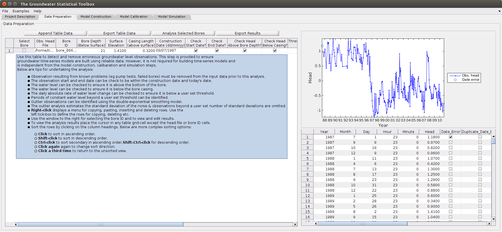

HydroSight - Data Preparation GUI Tab
Contents
Overview
The Data Preparation tab is the second tab from the left within the GUI (see below). It allows an unlimited number of unique bore IDs to be analysed for erroneous observations and outliers and provides summary statistics for each bore. This allows observations resulting from known problems (e.g. pump tests, failed bores) to be removed from the monitoring data prior to time-series modelling. Importantly, no outlier detection algorithm works for all types of data or and can detect all types of outliers. It is essential that the outlier detection algorithm and results be assessed as appropriate for each application.
The tab allows the following analysis to be undertaken:
- The observation start and end date can be checked to be within the construction date and today's date.
- The water level can be checked to ensure it is above the bottom of the bore.
- The water level can be checked to ensure it is below the top of the bore casing.
- The daily absolute rate of water level change can be checked to ensure it is below a user set threshold.
- Periods of constant water level beyond a user set threshold duration can be identified.
- Outlier observations can be identified using a double-exponential smoothing model. The model is used to estimate the standard deviation of the noise & the first observation beyond a user set number of standard deviations is omitted and the model is then re-calibrated and the outlier analysis repeated. The processes is repeated until fewer outlier observations are identified than is expected for the probability at the input number of standard deviations.
The screenshot below illustrates the main features of the tab. Specifically:
- The left-hand window tabulates the bores to be analysed.
- Unique analysis settings can be applied to each bore.
- Buttons above the table allow export of the table or appending of a .csv file.
- The results of the analysis can exported or displayed and edited using the right-hand results pane.

Getting Started
To analyse a series of bores, complete the following steps:
- Input the required settings (see below) for each bore.
- Select the bores to be analysed using the left tick box.
- Click on the button Analyse Selected Bores.
- Review the results for a bore by placing the cursor in one of its cells. This should display the hydrograph, with the outliers denoted, and a table of data. Importantly, the assessment of each water level observation can be manually edited using the table.
- Export the analysed data using the Export Results button and select the desired format.
Inputs
The following inputs are available for this tab. The bold inputs are required.
- Obs. Head File: a .csv file of the observed head with columns bore ID, year, month, day, head.
- Bore ID: a string for the bore ID to analyse. A pane on the right should be displayed when you place the cursor in this cell that lists the bore IDs within the above file.
- Bore Depth (Below Surface): used for checking if the water level is implausibly deep. Units are assumed to be the same as the the water level observations.
- Surface Elevation: used for checking if the water level is implausibly high (i.e. > land elevation + casing length).
- Casing Length (above surface): as for surface elevation input. Units are assumed to be the same as the the water level observations.
- Construction Date: used for checking if the observations were recorded before the bore was constructed.
- Check Start Date?: option to check the date of observations against the construction date.
- Check End Date?: option to check the date of observations against the current date.
- Check Head Above Bore Depth?: option to check if the water level is higher than the bottom of the bore.
- Check Head Below Casing?: option to check if the water level is shallower than the top of the casing elevation.
- Threshold for Max. Daily abs(Head) Change: the maximum absolute water level change per day that is deemed acceptable. Default is 10 m/day.
- Threshold Duration for Constant Head (days): the minimum duration of constant water level that is deemed acceptable. Default is 120 days.
- Auto-Outlier Num. St. dev: the number of standard deviations of the noise (estimated from the modelling) for estimation of outliers. The default is 3.
Outputs
The following outputs are presented within the table:
- Analysis Status : the status of the analysis for each bore is displayed within the table. Error messages for the analysis are also displayed in this column.
- No. Erroneous Obs. : after successful analysis, the number of erroneous observations are displayed for each bore within the table. This can be used to identify the bore analysis requiring visual review.
- No. Outlier Obs. : after successful analysis, the number of outlier observations is also displayed for each bore within the table. Again, this can be used to identify the bore analysis requiring visual review.